01 / COMPUTER VISIONPatterns in
the picture.
the picture.
DEEP LEARNING · PYTHON
Brain Tumor Detection
Used transfer learning and image preprocessing to classify brain MRI images as cancerous or non-cancerous.
✳ A LITTLE BIT OF ART, A LITTLE BIT OF DATA
Hello, I’m Basma Rahman — a computer science graduate, data enthusiast, and artist finding stories in both numbers and colors.
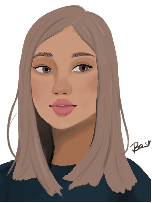
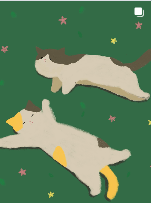
01 / THE SKETCHBOOK
A COLLECTION OF LITTLE WORLDS ✳A collection of portraits, playful characters, and moments brought to life through illustration.
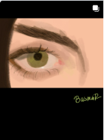
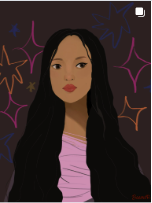
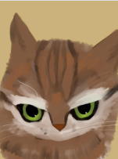
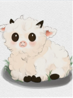
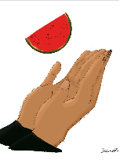
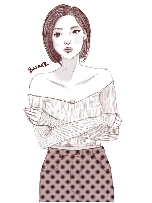
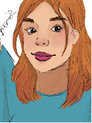
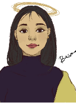
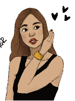
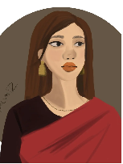
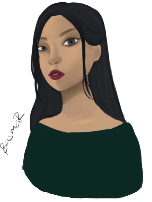
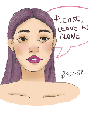
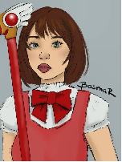
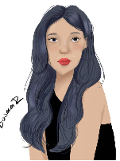
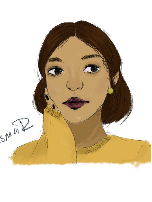
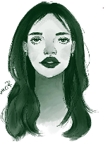
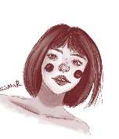
SELECTED ILLUSTRATIONSMADE BY BASMA ♡
02 / THE OTHER SIDE
THOUGHTFUL WORK, CURIOUS QUESTIONSFrom machine learning to network monitoring, here are a few ways I’ve explored what technology can do.
DEEP LEARNING · PYTHON
Used transfer learning and image preprocessing to classify brain MRI images as cancerous or non-cancerous.
ANALYTICS · FORECASTING
Compared ARIMA, LSTM, SVR, and Prophet models to explore market trends and forecasting performance.
LIBRENMS · SNMP · LINUX
Configured a monitoring system to track device health, network performance, and availability in real time.
PYTHON · PANDAS · MATPLOTLIB
Organized and visualized Bangladesh’s frequency allocation data with custom Python charts.
03 / A LITTLE ABOUT ME
I’m a Computer Science and Engineering graduate based in Dhaka, with a love for finding patterns, asking questions, and making things that mean something.
My background spans data science, machine learning, forecasting, and systems administration. Whether I’m working with a dataset or drawing a portrait, I bring curiosity and care to the process.
04 / THE JOURNEY SO FAR
A LITTLE BIT OF EVERYTHING ✳A mix of technology, teaching, and the experiences that shaped how I work.
Wordbridge School
Forge Solutions
University of Liberal Arts Bangladesh
United International University · CGPA 3.67
University of Liberal Arts Bangladesh · CGPA 3.66
05 / LET’S CONNECT ✳
Whether it’s a data project, a creative idea, or just a hello — I’d love to hear from you.
Drop me a note ↗